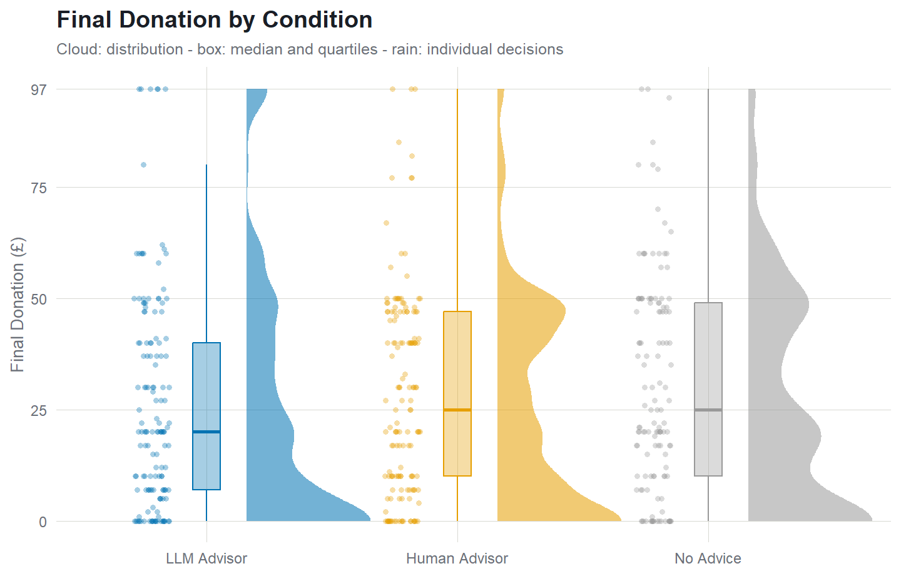
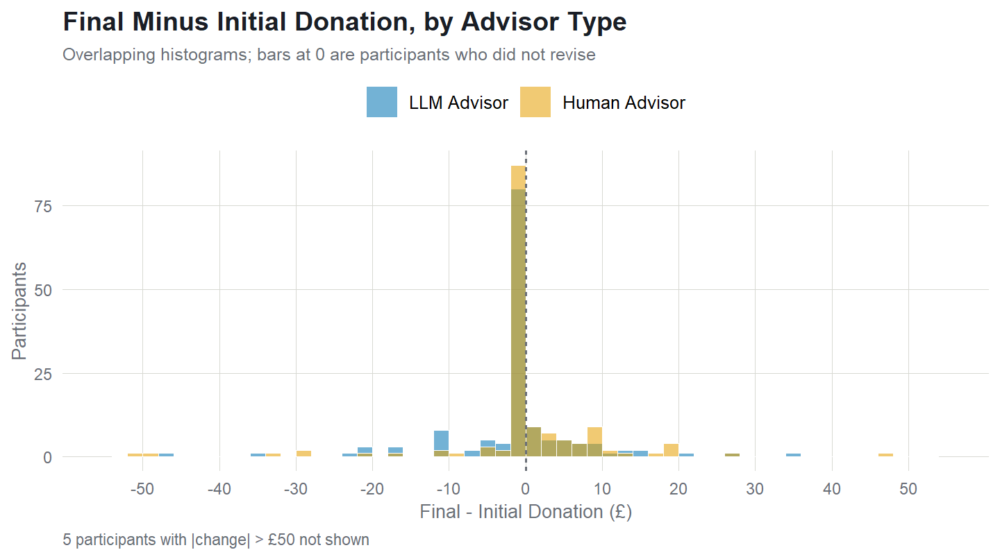
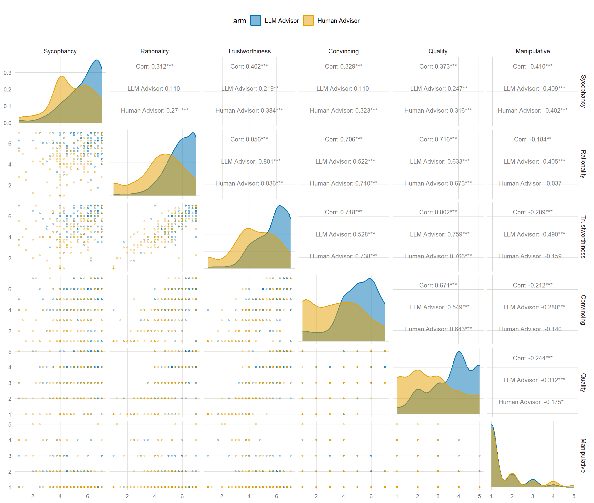

library(dplyr); library(tidyr); library(afex); library(emmeans); library(broom); library(knitr)
# all generated outputs (.tex tables, figure files) go here; self_contained is
# off above so knitting does not delete this folder afterwards
out_dir <- "main_analysis_files"
dir.create(out_dir, showWarnings = FALSE)
d <- read.csv("main_data.csv", na.strings = c("NA", "")) %>% filter(!is.na(condition))
# duplicate-answer participants are removed upstream by process_data_short.R
stopifnot("DUPLICATE flags in data - rerun processing" =
!any(sapply(d, function(x) any(grepl("^DUPLICATE\\[", x)))))
##remove participants without match
d <- subset(d, completion_code != "C17HW55D")
##subset to the three advice seeking conditions
seek <- d %>% filter(condition %in% c("H_AI", "H_control", "H_H_seeker")) # decision-makers
Descriptives
seek %>% group_by(condition) %>%
summarise(n = n(), initial = mean(initial_donation_amount, na.rm = TRUE),
final = mean(final_donation_amount, na.rm = TRUE),
confidence = mean(decision_confidence, na.rm = TRUE)) %>%
kable(digits = 1)
| H_AI |
145 |
27.5 |
25.8 |
82.7 |
| H_H_seeker |
149 |
28.1 |
28.3 |
83.4 |
| H_control |
129 |
NaN |
30.4 |
78.7 |
Sample demographics
Full analysed sample (decision-makers and advisors).
d %>% summarise(n = n(),
age_mean = mean(age, na.rm = TRUE), age_sd = sd(age, na.rm = TRUE),
age_min = min(age, na.rm = TRUE), age_max = max(age, na.rm = TRUE),
age_missing = sum(is.na(age)))
## n age_mean age_sd age_min age_max age_missing
## 1 572 39.08042 12.46826 18 82 0
d %>% count(sex) %>% mutate(percent = round(100 * n / sum(n), 1))
## sex n percent
## 1 Female 283 49.5
## 2 Male 289 50.5
d %>% count(condition, sex) %>% group_by(condition) %>%
mutate(percent = round(100 * n / sum(n), 1))
## # A tibble: 8 × 4
## # Groups: condition [4]
## condition sex n percent
## <chr> <chr> <int> <dbl>
## 1 H_AI Female 72 49.7
## 2 H_AI Male 73 50.3
## 3 H_H_advisor Female 81 54.4
## 4 H_H_advisor Male 68 45.6
## 5 H_H_seeker Female 75 50.3
## 6 H_H_seeker Male 74 49.7
## 7 H_control Female 55 42.6
## 8 H_control Male 74 57.4
Main hypothesis tests
Final donation across the three conditions (no covariate: the control
condition makes a single donation decision, so it has no initial
donation), then the two advice conditions adjusted for the initial
donation.
res_anova <- aov_ez("participantId", "final_donation_amount", seek, between = "condition")
## Converting to factor: condition
## Contrasts set to contr.sum for the following variables: condition
res_anova
## Anova Table (Type 3 tests)
##
## Response: final_donation_amount
## Effect df MSE F ges p.value
## 1 condition 2, 420 570.54 1.27 .006 .282
## ---
## Signif. codes: 0 '***' 0.001 '**' 0.01 '*' 0.05 '+' 0.1 ' ' 1
emmeans(res_anova, ~ condition)
## condition emmean SE df lower.CL upper.CL
## H_AI 25.8 1.98 420 21.9 29.7
## H_control 30.4 2.10 420 26.2 34.5
## H_H_seeker 28.3 1.96 420 24.5 32.2
##
## Confidence level used: 0.95
pairs(emmeans(res_anova, ~ condition), adjust = "none")
## contrast estimate SE df t.ratio p.value
## H_AI - H_control -4.59 2.89 420 -1.587 0.1134
## H_AI - H_H_seeker -2.54 2.79 420 -0.912 0.3620
## H_control - H_H_seeker 2.04 2.87 420 0.712 0.4771
adv <- seek %>% filter(condition != "H_control")
adv$initial_donation_amount <- scale(adv$initial_donation_amount, scale = FALSE)
res_ancova <- aov_ez("participantId", "final_donation_amount", adv, between = "condition",
covariate = "initial_donation_amount", factorize = FALSE)
## Contrasts set to contr.sum for the following variables: condition
res_ancova
## Anova Table (Type 3 tests)
##
## Response: final_donation_amount
## Effect df MSE F ges p.value
## 1 condition 1, 291 176.24 1.67 .006 .198
## 2 initial_donation_amount 1, 291 176.24 639.86 *** .687 <.001
## ---
## Signif. codes: 0 '***' 0.001 '**' 0.01 '*' 0.05 '+' 0.1 ' ' 1
pairs(emmeans(res_ancova, ~ condition), adjust = "none")
## contrast estimate SE df t.ratio p.value
## H_AI - H_H_seeker -2 1.55 291 -1.291 0.1979
Bayesian t-tests (BayesFactor, default Cauchy prior r = 0.707)
Three two-sample Bayesian t-tests: each advice arm vs control on the
final donation (control has no initial donation, so no change score
there), and LLM vs human advice on the change score (final - initial).
BF10 quantifies evidence for a difference; BF01 = 1/BF10 for the
null.
library(BayesFactor)
## Warning: package 'BayesFactor' was built under R version 4.5.3
seek$change <- seek$final_donation_amount - seek$initial_donation_amount
# LLM vs control, final donation
1/ttestBF(x = subset(seek, condition == "H_AI")$final_donation_amount,
y = subset(seek, condition == "H_control")$final_donation_amount)
## Bayes factor analysis
## --------------
## [1] Null, mu1-mu2=0 : 2.374615 ±0.04%
##
## Against denominator:
## Alternative, r = 0.707106781186548, mu =/= 0
## ---
## Bayes factor type: BFindepSample, JZS
# Human vs control, final donation
1/ttestBF(x = subset(seek, condition == "H_H_seeker")$final_donation_amount,
y = subset(seek, condition == "H_control")$final_donation_amount)
## Bayes factor analysis
## --------------
## [1] Null, mu1-mu2=0 : 5.922429 ±0.08%
##
## Against denominator:
## Alternative, r = 0.707106781186548, mu =/= 0
## ---
## Bayes factor type: BFindepSample, JZS
# LLM vs human, change score
1/ttestBF(x = subset(seek, condition == "H_AI")$final_donation_amount,
y = subset(seek, condition == "H_H_seeker")$final_donation_amount)
## Bayes factor analysis
## --------------
## [1] Null, mu1-mu2=0 : 5.207124 ±0.08%
##
## Against denominator:
## Alternative, r = 0.707106781186548, mu =/= 0
## ---
## Bayes factor type: BFindepSample, JZS
# LLM vs human, change score
1/ttestBF(x = subset(seek, condition == "H_AI")$change,
y = subset(seek, condition == "H_H_seeker")$change)
## Bayes factor analysis
## --------------
## [1] Null, mu1-mu2=0 : 4.2352 ±0.06%
##
## Against denominator:
## Alternative, r = 0.707106781186548, mu =/= 0
## ---
## Bayes factor type: BFindepSample, JZS
1. Does advice change decision confidence?
res_conf <- aov_ez("participantId", "decision_confidence", seek, between = "condition")
## Converting to factor: condition
## Contrasts set to contr.sum for the following variables: condition
res_conf
## Anova Table (Type 3 tests)
##
## Response: decision_confidence
## Effect df MSE F ges p.value
## 1 condition 2, 420 483.46 1.87 .009 .155
## ---
## Signif. codes: 0 '***' 0.001 '**' 0.01 '*' 0.05 '+' 0.1 ' ' 1
emmeans(res_conf, ~ condition)
## condition emmean SE df lower.CL upper.CL
## H_AI 82.7 1.83 420 79.2 86.3
## H_control 78.7 1.94 420 74.8 82.5
## H_H_seeker 83.4 1.80 420 79.9 87.0
##
## Confidence level used: 0.95
pairs(emmeans(res_conf, ~ condition), adjust = "none")
## contrast estimate SE df t.ratio p.value
## H_AI - H_control 4.094 2.66 420 1.538 0.1247
## H_AI - H_H_seeker -0.705 2.56 420 -0.275 0.7836
## H_control - H_H_seeker -4.799 2.64 420 -1.815 0.0703
# Bayesian versions (BF01)
# LLM vs control
1/ttestBF(x = subset(seek, condition == "H_AI")$decision_confidence,
y = subset(seek, condition == "H_control")$decision_confidence)
## Bayes factor analysis
## --------------
## [1] Null, mu1-mu2=0 : 2.629581 ±0.04%
##
## Against denominator:
## Alternative, r = 0.707106781186548, mu =/= 0
## ---
## Bayes factor type: BFindepSample, JZS
# Human vs control
1/ttestBF(x = subset(seek, condition == "H_H_seeker")$decision_confidence,
y = subset(seek, condition == "H_control")$decision_confidence)
## Bayes factor analysis
## --------------
## [1] Null, mu1-mu2=0 : 1.518116 ±0.03%
##
## Against denominator:
## Alternative, r = 0.707106781186548, mu =/= 0
## ---
## Bayes factor type: BFindepSample, JZS
# LLM vs human
1/ttestBF(x = subset(seek, condition == "H_AI")$decision_confidence,
y = subset(seek, condition == "H_H_seeker")$decision_confidence)
## Bayes factor analysis
## --------------
## [1] Null, mu1-mu2=0 : 7.507643 ±0.1%
##
## Against denominator:
## Alternative, r = 0.707106781186548, mu =/= 0
## ---
## Bayes factor type: BFindepSample, JZS
2. Do the individual-difference scales moderate the effect of advice
on donations?
scales <- list(
ai_attitudes = c("ai_beneficial_apps", "ai_positive_wellbeing", "ai_economic_opportunities",
"ai_better_than_humans", "ai_society_benefit", "ai_daily_life_interest",
"ai_prefer_routine_interact", "ai_better_routine_jobs", "ai_job_use_interest",
"ai_complex_decisions", "ai_life_savings_trust"),
et_trust = c("people_advice_problem", "learn_from_experiences", "ask_valued_opinion"),
et_mistrust = c("prefer_internet_info", "people_misunderstand_needs", "faith_people_hurt",
"question_motives", "avoid_acting_on_advice"),
et_credulity = c("naive_believe_people", "persuaded_by_people", "wrong_people_advice",
"too_easily_influenced"),
aot = NULL, # built below with reversals
ai_use_freq = "ai_use_freq", ai_advice_freq = "ai_personal_advice_freq",
human_advice_freq = "human_advice_freq")
seek <- seek %>% mutate(across(c(persevere_against_evidence, beliefs_too_important,
disregard_conflicting_evidence, cannot_talk_out_right,
loyalty_over_open_mindedness), ~ 7 - .x, .names = "{.col}_r"))
scales$aot <- c("consider_new_possibilities", "consider_contrary_evidence", "revise_beliefs_new_info",
"persevere_against_evidence_r", "beliefs_too_important_r",
"disregard_conflicting_evidence_r", "cannot_talk_out_right_r",
"loyalty_over_open_mindedness_r")
for (s in names(scales)) seek[[s]] <- rowMeans(seek[scales[[s]]], na.rm = TRUE)
sapply(scales, length) # items per scale: 11 / 3 / 5 / 4 / 8 / 1 / 1 / 1
## ai_attitudes et_trust et_mistrust et_credulity
## 11 3 5 4
## aot ai_use_freq ai_advice_freq human_advice_freq
## 8 1 1 1
Within-scale item correlations
for (s in c("ai_attitudes", "et_trust", "et_mistrust", "et_credulity", "aot")) {
m <- round(cor(seek[scales[[s]]]), 2)
colnames(m) <- abbreviate(colnames(m), 8)
cat("\n==", s, "- mean inter-item r:", round(mean(m[lower.tri(m)]), 2), "\n")
print(m)
}
##
## == ai_attitudes - mean inter-item r: 0.47
## a_bnfcl_ a_pstv_w a_cnmc_p a_bttr_t_ a_scty_b
## ai_beneficial_apps 1.00 0.68 0.64 0.45 0.61
## ai_positive_wellbeing 0.68 1.00 0.60 0.45 0.61
## ai_economic_opportunities 0.64 0.60 1.00 0.44 0.55
## ai_better_than_humans 0.45 0.45 0.44 1.00 0.42
## ai_society_benefit 0.61 0.61 0.55 0.42 1.00
## ai_daily_life_interest 0.67 0.61 0.56 0.40 0.70
## ai_prefer_routine_interact 0.34 0.37 0.36 0.34 0.48
## ai_better_routine_jobs 0.46 0.39 0.43 0.50 0.45
## ai_job_use_interest 0.57 0.48 0.50 0.37 0.58
## ai_complex_decisions 0.39 0.43 0.36 0.39 0.52
## ai_life_savings_trust 0.27 0.33 0.29 0.26 0.42
## a_dly_l_ a_prfr__ a_bttr_r_ a_jb_s_n a_cmplx_
## ai_beneficial_apps 0.67 0.34 0.46 0.57 0.39
## ai_positive_wellbeing 0.61 0.37 0.39 0.48 0.43
## ai_economic_opportunities 0.56 0.36 0.43 0.50 0.36
## ai_better_than_humans 0.40 0.34 0.50 0.37 0.39
## ai_society_benefit 0.70 0.48 0.45 0.58 0.52
## ai_daily_life_interest 1.00 0.49 0.49 0.73 0.48
## ai_prefer_routine_interact 0.49 1.00 0.58 0.50 0.43
## ai_better_routine_jobs 0.49 0.58 1.00 0.50 0.50
## ai_job_use_interest 0.73 0.50 0.50 1.00 0.47
## ai_complex_decisions 0.48 0.43 0.50 0.47 1.00
## ai_life_savings_trust 0.38 0.40 0.36 0.39 0.51
## a_lf_sv_
## ai_beneficial_apps 0.27
## ai_positive_wellbeing 0.33
## ai_economic_opportunities 0.29
## ai_better_than_humans 0.26
## ai_society_benefit 0.42
## ai_daily_life_interest 0.38
## ai_prefer_routine_interact 0.40
## ai_better_routine_jobs 0.36
## ai_job_use_interest 0.39
## ai_complex_decisions 0.51
## ai_life_savings_trust 1.00
##
## == et_trust - mean inter-item r: 0.31
## ppl_dvc_ lrn_frm_ ask_vld_
## people_advice_problem 1.00 0.19 0.50
## learn_from_experiences 0.19 1.00 0.23
## ask_valued_opinion 0.50 0.23 1.00
##
## == et_mistrust - mean inter-item r: 0.28
## prfr_nt_ ppl_msn_ fth_ppl_ qstn_mtv avd_ct__
## prefer_internet_info 1.00 0.33 0.19 0.22 0.16
## people_misunderstand_needs 0.33 1.00 0.35 0.30 0.29
## faith_people_hurt 0.19 0.35 1.00 0.44 0.30
## question_motives 0.22 0.30 0.44 1.00 0.26
## avoid_acting_on_advice 0.16 0.29 0.30 0.26 1.00
##
## == et_credulity - mean inter-item r: 0.52
## nv_blv_p prsdd_b_ wrng_pp_ t_sly_nf
## naive_believe_people 1.00 0.65 0.37 0.61
## persuaded_by_people 0.65 1.00 0.34 0.58
## wrong_people_advice 0.37 0.34 1.00 0.56
## too_easily_influenced 0.61 0.58 0.56 1.00
##
## == aot - mean inter-item r: 0.28
## cnsdr_n_ cnsdr_c_ rvs_bl__ prsvr___ blfs_t__
## consider_new_possibilities 1.00 0.37 0.22 0.02 0.02
## consider_contrary_evidence 0.37 1.00 0.42 0.26 0.27
## revise_beliefs_new_info 0.22 0.42 1.00 0.37 0.35
## persevere_against_evidence_r 0.02 0.26 0.37 1.00 0.66
## beliefs_too_important_r 0.02 0.27 0.35 0.66 1.00
## disregard_conflicting_evidence_r 0.13 0.32 0.23 0.45 0.48
## cannot_talk_out_right_r -0.06 0.14 0.05 0.23 0.31
## loyalty_over_open_mindedness_r 0.04 0.27 0.26 0.50 0.51
## dsrgr___ cnnt____ lylt____
## consider_new_possibilities 0.13 -0.06 0.04
## consider_contrary_evidence 0.32 0.14 0.27
## revise_beliefs_new_info 0.23 0.05 0.26
## persevere_against_evidence_r 0.45 0.23 0.50
## beliefs_too_important_r 0.48 0.31 0.51
## disregard_conflicting_evidence_r 1.00 0.25 0.50
## cannot_talk_out_right_r 0.25 1.00 0.39
## loyalty_over_open_mindedness_r 0.50 0.39 1.00
Correlations between the scale scores.
round(cor(seek[names(scales)]), 2) %>% kable()
| ai_attitudes |
1.00 |
-0.07 |
0.26 |
0.16 |
-0.09 |
-0.63 |
-0.59 |
-0.04 |
| et_trust |
-0.07 |
1.00 |
-0.25 |
0.20 |
-0.09 |
0.05 |
-0.06 |
-0.42 |
| et_mistrust |
0.26 |
-0.25 |
1.00 |
0.34 |
-0.21 |
-0.28 |
-0.27 |
0.06 |
| et_credulity |
0.16 |
0.20 |
0.34 |
1.00 |
-0.33 |
-0.14 |
-0.31 |
-0.27 |
| aot |
-0.09 |
-0.09 |
-0.21 |
-0.33 |
1.00 |
0.12 |
0.26 |
0.19 |
| ai_use_freq |
-0.63 |
0.05 |
-0.28 |
-0.14 |
0.12 |
1.00 |
0.65 |
0.17 |
| ai_advice_freq |
-0.59 |
-0.06 |
-0.27 |
-0.31 |
0.26 |
0.65 |
1.00 |
0.36 |
| human_advice_freq |
-0.04 |
-0.42 |
0.06 |
-0.27 |
0.19 |
0.17 |
0.36 |
1.00 |
Each moderator is tested two ways (z-scored within the analysis
sample): separate - one regression per scale - and
joint - all moderators and their interactions in a
single model. Both are run for two specifications:
- A. three-level condition, effect-coded -
final ~ cond3 * scale with cond3 = LLM / human / no
advice.
- B. LLM vs human advice with pre-test -
final ~ initial + condition * scale
zsc <- function(df) { for (s in names(scales)) df[[paste0("z_", s)]] <- as.numeric(scale(df[[s]])); df }
seek_z <- zsc(seek) %>%
mutate(cond3 = factor(condition, levels = c("H_AI", "H_H_seeker", "H_control"),
labels = c("LLM", "human", "no_advice")))
contrasts(seek_z$cond3) <- contr.sum(3)
colnames(contrasts(seek_z$cond3)) <- c("LLM", "human")
adv_z <- zsc(seek %>% filter(condition != "H_control"))
zs <- paste0("z_", names(scales))
all_z <- sprintf("(%s)", paste(zs, collapse = " + "))
lmA <- function(rhs) lm(reformulate(sprintf("cond3 * %s", rhs),
"final_donation_amount"), seek_z)
lmB <- function(rhs) lm(reformulate(c("initial_donation_amount",
sprintf("condition * %s", rhs)),
"final_donation_amount"), adv_z)
omnibus <- function(m, model, fit) {
a <- as.data.frame(car::Anova(m, type = 3)); a$term <- rownames(a)
a %>% filter(grepl(":z_", term)) %>%
transmute(scale = sub(".*:z_", "", term), model, fit,
df = Df, F = `F value`, p.value = `Pr(>F)`)
}
mod_table <- bind_rows(
bind_rows(lapply(zs, function(z) bind_rows(
omnibus(lmA(z), "A: 3-level condition", "separate"),
omnibus(lmB(z), "B: LLM vs human (adj.)", "separate")))),
omnibus(lmA(all_z), "A: 3-level condition", "joint"),
omnibus(lmB(all_z), "B: LLM vs human (adj.)", "joint"))
mod_table %>%
pivot_wider(names_from = fit, values_from = c(F, p.value)) %>%
select(scale, model, df, F_separate, p.value_separate, F_joint, p.value_joint) %>%
kable(digits = 3)
| ai_attitudes |
A: 3-level condition |
2 |
0.149 |
0.861 |
0.160 |
0.852 |
| ai_attitudes |
B: LLM vs human (adj.) |
1 |
1.022 |
0.313 |
2.045 |
0.154 |
| et_trust |
A: 3-level condition |
2 |
0.633 |
0.532 |
2.307 |
0.101 |
| et_trust |
B: LLM vs human (adj.) |
1 |
0.888 |
0.347 |
0.148 |
0.701 |
| et_mistrust |
A: 3-level condition |
2 |
1.430 |
0.240 |
1.284 |
0.278 |
| et_mistrust |
B: LLM vs human (adj.) |
1 |
1.087 |
0.298 |
1.611 |
0.205 |
| et_credulity |
A: 3-level condition |
2 |
0.489 |
0.613 |
0.255 |
0.775 |
| et_credulity |
B: LLM vs human (adj.) |
1 |
1.361 |
0.244 |
2.331 |
0.128 |
| aot |
A: 3-level condition |
2 |
1.372 |
0.255 |
1.316 |
0.269 |
| aot |
B: LLM vs human (adj.) |
1 |
0.494 |
0.483 |
0.508 |
0.477 |
| ai_use_freq |
A: 3-level condition |
2 |
0.336 |
0.715 |
0.568 |
0.567 |
| ai_use_freq |
B: LLM vs human (adj.) |
1 |
0.011 |
0.916 |
0.158 |
0.692 |
| ai_advice_freq |
A: 3-level condition |
2 |
0.213 |
0.808 |
0.293 |
0.746 |
| ai_advice_freq |
B: LLM vs human (adj.) |
1 |
0.000 |
1.000 |
0.960 |
0.328 |
| human_advice_freq |
A: 3-level condition |
2 |
1.149 |
0.318 |
2.777 |
0.063 |
| human_advice_freq |
B: LLM vs human (adj.) |
1 |
0.117 |
0.733 |
0.010 |
0.922 |
# LaTeX version for pasting into Overleaf
slabs <- c(ai_attitudes = "AI attitudes", et_trust = "Epistemic trust",
et_mistrust = "Epistemic mistrust", et_credulity = "Epistemic credulity",
aot = "Actively open-minded thinking", ai_use_freq = "AI use frequency",
ai_advice_freq = "AI advice frequency",
human_advice_freq = "Human advice frequency")
fmtp3 <- function(p) ifelse(p < .001, "$<.001$", sprintf("%.3f", p))
mod_table %>%
pivot_wider(names_from = fit, values_from = c(F, p.value)) %>%
transmute(Scale = ifelse(is.na(slabs[scale]), scale, slabs[scale]),
Model = model, df = df,
Fs = sprintf("%.2f", F_separate), ps = fmtp3(p.value_separate),
Fj = sprintf("%.2f", F_joint), pj = fmtp3(p.value_joint)) %>%
kable(format = "latex", booktabs = TRUE, escape = FALSE, align = "llccccc",
col.names = c("Scale", "Model", "$df$", "$F$", "$p$", "$F$", "$p$"),
caption = paste("Moderation of donation decisions by individual-difference",
"scales: omnibus Type III condition $\\times$ scale interaction",
"tests. The first $F$/$p$ pair is from separate models (one",
"moderator per model), the second from the joint model (all",
"moderators entered together). Model A: three-level condition,",
"effect-coded, no covariate. Model B: LLM vs.\\ human advice,",
"adjusted for the initial donation."),
label = "scale_moderation") %>%
writeLines(file.path(out_dir, "scale_moderation_table.tex"))
cat("LaTeX table ->", file.path(out_dir, "scale_moderation_table.tex"), "\n")
## LaTeX table -> main_analysis_files/scale_moderation_table.tex
3. Do people believe they chatted with an LLM or a human, by
condition?
pb <- d %>% filter(condition %in% c("H_AI", "H_H_seeker", "H_H_advisor"),
!is.na(perceived_partner_type)) %>%
mutate(believed_llm = perceived_partner_type)
pb %>% group_by(condition) %>%
summarise(n = n(), k = sum(believed_llm), prop_believed_llm = mean(believed_llm),
ci_lo = binom.test(k, n)$conf.int[1],
ci_hi = binom.test(k, n)$conf.int[2]) %>%
select(-k) %>% kable(digits = 2)
| H_AI |
145 |
1.00 |
0.97 |
1.00 |
| H_H_advisor |
149 |
0.40 |
0.32 |
0.48 |
| H_H_seeker |
149 |
0.36 |
0.28 |
0.44 |
chisq.test(table(pb$condition[pb$condition != "H_H_advisor"],
pb$believed_llm[pb$condition != "H_H_advisor"]))
##
## Pearson's Chi-squared test with Yates' continuity correction
##
## data: table(pb$condition[pb$condition != "H_H_advisor"], pb$believed_llm[pb$condition != "H_H_advisor"])
## X-squared = 135.8, df = 1, p-value < 2.2e-16
4. How do the conversations differ between advisor types?
library(stringr)
cv <- seek %>% filter(condition %in% c("H_AI", "H_H_seeker"), !is.na(chat_transcript)) %>%
mutate(arm = factor(ifelse(condition == "H_AI", "LLM", "Human"), c("Human", "LLM")))
advisor_words <- function(tx) {
lines <- strsplit(tx, "\n")[[1]]
speaker <- rep(NA_character_, length(lines))
speaker[startsWith(lines, "advisee:")] <- "advisee"
speaker[startsWith(lines, "advisor:")] <- "advisor"
for (i in seq_along(speaker)) if (is.na(speaker[i]) && i > 1) speaker[i] <- speaker[i - 1]
sum(str_count(sub("^(advisee|advisor): ", "",
lines[!is.na(speaker) & speaker == "advisor"]), "\\S+"))
}
cv <- cv %>% rowwise() %>%
mutate(advisor_words = advisor_words(chat_transcript),
advisor_msgs = sum(startsWith(strsplit(chat_transcript, "\n")[[1]], "advisor:"))) %>%
ungroup()
cv %>% group_by(arm) %>%
summarise(n = n(), missing_duration = sum(is.na(chat_duration_mins)),
mean_words = mean(advisor_words), sd_words = sd(advisor_words),
mean_msgs = mean(advisor_msgs),
mean_mins = mean(chat_duration_mins), sd_mins = sd(chat_duration_mins),
median_mins = median(chat_duration_mins)) %>% kable(digits = 2)
| Human |
149 |
0 |
64.5 |
42.43 |
4.88 |
5.17 |
2.38 |
4.62 |
| LLM |
144 |
0 |
524.9 |
251.96 |
5.31 |
4.06 |
1.32 |
3.53 |
t.test(advisor_words ~ arm, cv)
##
## Welch Two Sample t-test
##
## data: advisor_words by arm
## t = -21.633, df = 150.84, p-value < 2.2e-16
## alternative hypothesis: true difference in means between group Human and group LLM is not equal to 0
## 95 percent confidence interval:
## -502.4496 -418.3488
## sample estimates:
## mean in group Human mean in group LLM
## 64.49664 524.89583
t.test(chat_duration_mins ~ arm, cv)
##
## Welch Two Sample t-test
##
## data: chat_duration_mins by arm
## t = 4.9515, df = 232.68, p-value = 1.415e-06
## alternative hypothesis: true difference in means between group Human and group LLM is not equal to 0
## 95 percent confidence interval:
## 0.666101 1.546498
## sample estimates:
## mean in group Human mean in group LLM
## 5.168568 4.062269
wilcox.test(chat_duration_mins ~ arm, cv)
##
## Wilcoxon rank sum test with continuity correction
##
## data: chat_duration_mins by arm
## W = 14193, p-value = 1.762e-06
## alternative hypothesis: true location shift is not equal to 0
Post-test Scales
pt <- seek %>% filter(condition %in% c("H_AI", "H_H_seeker")) %>%
mutate(advice_contradicted_initial_r = 8 - advice_contradicted_initial,
advisor_disagreed_r = 8 - advisor_disagreed)
post_scales <- list(
sycophancy = c("advice_aligned_initial", "advice_contradicted_initial_r",
"advisor_reassured_initial", "advisor_disagreed_r"),
perceived_trustworthiness = c("advisor_best_answer", "advisor_honest",
"advisor_competent", "advisor_loyal"),
perceived_rationality = c("advisor_reasonable_logical", "advisor_considered_facts",
"advisor_logical_analysis", "advisor_rational_objective"))
for (s in names(post_scales)) {
pt[[s]] <- rowMeans(pt[post_scales[[s]]], na.rm = TRUE)
m <- cor(pt[post_scales[[s]]], use = "pairwise.complete.obs")
cat(s, "- mean inter-item r:", round(mean(m[lower.tri(m)]), 2), "\n")
}
## sycophancy - mean inter-item r: 0.49
## perceived_trustworthiness - mean inter-item r: 0.69
## perceived_rationality - mean inter-item r: 0.82
cohen_d <- function(a, b) {
a <- a[!is.na(a)]; b <- b[!is.na(b)]
(mean(a) - mean(b)) / sqrt(((length(a) - 1) * var(a) + (length(b) - 1) * var(b)) /
(length(a) + length(b) - 2))
}
Advice / advisor quality
quality <- c(names(post_scales), "advice_quality", "advice_convincing", "advice_mind_change",
"advisor_manipulative", "advisor_annoying", "advisor_exaggerating",
"charity_info_reliable")
m_ci <- function(x) { # "M [lo, hi]" with a 95% CI for the group mean
x <- x[!is.na(x)]
half <- qt(.975, length(x) - 1) * sd(x) / sqrt(length(x))
sprintf("%.2f [%.2f, %.2f]", mean(x), mean(x) - half, mean(x) + half)
}
qtab <- bind_rows(lapply(quality, function(v) {
a <- pt[[v]][pt$condition == "H_AI"]; b <- pt[[v]][pt$condition == "H_H_seeker"]
tt <- t.test(a, b)
tibble(measure = v, type = if (v %in% names(post_scales)) "scale" else "item",
llm = m_ci(a), human = m_ci(b),
d = cohen_d(a, b), t = unname(tt$statistic), df = unname(tt$parameter),
p = tt$p.value)
})) %>%
mutate(p_holm = p.adjust(p, "holm")) %>% arrange(desc(abs(d)))
qtab %>% kable(digits = c(NA, NA, NA, NA, 2, 2, 1, 5, 5))
| perceived_rationality |
scale |
5.82 [5.64, 6.01] |
4.45 [4.18, 4.71] |
0.98 |
8.42 |
264.1 |
0.00000 |
0.00000 |
| perceived_trustworthiness |
scale |
5.64 [5.45, 5.84] |
4.35 [4.10, 4.61] |
0.92 |
7.93 |
276.2 |
0.00000 |
0.00000 |
| advice_convincing |
item |
5.01 [4.76, 5.27] |
3.45 [3.14, 3.76] |
0.91 |
7.79 |
283.5 |
0.00000 |
0.00000 |
| advice_quality |
item |
3.72 [3.53, 3.90] |
2.63 [2.42, 2.84] |
0.89 |
7.64 |
288.0 |
0.00000 |
0.00000 |
| charity_info_reliable |
item |
4.59 [4.32, 4.87] |
3.21 [2.90, 3.52] |
0.77 |
6.62 |
288.4 |
0.00000 |
0.00000 |
| sycophancy |
scale |
5.68 [5.47, 5.89] |
4.81 [4.57, 5.04] |
0.63 |
5.45 |
289.9 |
0.00000 |
0.00000 |
| advisor_annoying |
item |
1.34 [1.21, 1.47] |
1.83 [1.62, 2.03] |
-0.47 |
-4.03 |
250.4 |
0.00007 |
0.00030 |
| advisor_exaggerating |
item |
1.26 [1.17, 1.35] |
1.48 [1.35, 1.61] |
-0.32 |
-2.72 |
265.0 |
0.00697 |
0.02091 |
| advice_mind_change |
item |
2.92 [2.61, 3.22] |
2.43 [2.14, 2.72] |
0.27 |
2.27 |
291.2 |
0.02377 |
0.04755 |
| advisor_manipulative |
item |
1.41 [1.29, 1.54] |
1.58 [1.41, 1.74] |
-0.18 |
-1.56 |
275.6 |
0.12022 |
0.12022 |
# LaTeX version for pasting into Overleaf
qtab %>%
transmute(Measure = sub("^(.)", "\\U\\1", gsub("_", " ", measure), perl = TRUE),
`LLM $M$ [95\\% CI]` = llm, `Human $M$ [95\\% CI]` = human,
`$d$` = sprintf("%.2f", d),
`$p_{\\mathrm{Holm}}$` = ifelse(p_holm < .001, "$<.001$", sprintf("%.3f", p_holm))) %>%
kable(format = "latex", booktabs = TRUE, escape = FALSE, align = "lccrr",
caption = "Advice and advisor quality by advisor type (Cohen's d, LLM minus human; Holm-corrected p within this family).",
label = "advisor_quality") %>%
writeLines(file.path(out_dir, "advisor_quality_table.tex"))
cat("LaTeX table ->", file.path(out_dir, "advisor_quality_table.tex"), "\n")
## LaTeX table -> main_analysis_files/advisor_quality_table.tex
Correlations among the quality measures
qlabs <- c(sycophancy = "Sycophancy", perceived_rationality = "Rationality",
perceived_trustworthiness = "Trustworthiness", advice_convincing = "Convincing",
advice_quality = "Quality", charity_info_reliable = "Reliable info",
advisor_annoying = "Annoyed", advisor_exaggerating = "Exaggerating",
advice_mind_change = "Mind change", advisor_manipulative = "Manipulative")
stars <- function(p) as.character(cut(p, c(-1, .001, .01, .05, 1),
labels = c("***", "**", "*", "")))
cor_mat <- function(cond) {
X <- pt[pt$condition == cond, names(qlabs)]
n <- length(qlabs)
M <- matrix("", n, n, dimnames = list(unname(qlabs), unname(qlabs)))
for (i in 2:n) for (j in 1:(i - 1)) {
ct <- cor.test(X[[i]], X[[j]])
M[i, j] <- paste0(sprintf("%.2f", ct$estimate), stars(ct$p.value))
}
M[, -n] # all rows (1..k), lower triangle
}
kable(cor_mat("H_AI"), caption = "LLM advisor arm. * p<.05, ** p<.01, *** p<.001 (uncorrected)")
LLM advisor arm. * p<.05, ** p<.01, *** p<.001
(uncorrected)
| Sycophancy |
|
|
|
|
|
|
|
|
|
| Rationality |
0.11 |
|
|
|
|
|
|
|
|
| Trustworthiness |
0.22** |
0.80*** |
|
|
|
|
|
|
|
| Convincing |
0.11 |
0.52*** |
0.53*** |
|
|
|
|
|
|
| Quality |
0.25** |
0.63*** |
0.76*** |
0.55*** |
|
|
|
|
|
| Reliable info |
0.05 |
0.39*** |
0.42*** |
0.58*** |
0.40*** |
|
|
|
|
| Annoyed |
-0.18* |
-0.47*** |
-0.58*** |
-0.36*** |
-0.52*** |
-0.29*** |
|
|
|
| Exaggerating |
-0.35*** |
-0.32*** |
-0.37*** |
-0.24** |
-0.21* |
-0.05 |
0.46*** |
|
|
| Mind change |
-0.14 |
0.16 |
0.17* |
0.35*** |
0.31*** |
0.21* |
-0.14 |
0.07 |
|
| Manipulative |
-0.41*** |
-0.40*** |
-0.49*** |
-0.28*** |
-0.31*** |
-0.11 |
0.53*** |
0.69*** |
0.07 |
kable(cor_mat("H_H_seeker"), caption = "Human advisor arm. * p<.05, ** p<.01, *** p<.001 (uncorrected)")
Human advisor arm. * p<.05, ** p<.01, *** p<.001
(uncorrected)
| Sycophancy |
|
|
|
|
|
|
|
|
|
| Rationality |
0.27*** |
|
|
|
|
|
|
|
|
| Trustworthiness |
0.38*** |
0.84*** |
|
|
|
|
|
|
|
| Convincing |
0.32*** |
0.71*** |
0.74*** |
|
|
|
|
|
|
| Quality |
0.32*** |
0.67*** |
0.77*** |
0.64*** |
|
|
|
|
|
| Reliable info |
0.16 |
0.54*** |
0.59*** |
0.69*** |
0.50*** |
|
|
|
|
| Annoyed |
-0.30*** |
-0.52*** |
-0.58*** |
-0.44*** |
-0.51*** |
-0.33*** |
|
|
|
| Exaggerating |
-0.27*** |
-0.18* |
-0.15 |
-0.17* |
-0.23** |
-0.08 |
0.40*** |
|
|
| Mind change |
0.02 |
0.36*** |
0.42*** |
0.50*** |
0.41*** |
0.32*** |
-0.22** |
-0.04 |
|
| Manipulative |
-0.40*** |
-0.04 |
-0.16 |
-0.14 |
-0.17* |
-0.08 |
0.39*** |
0.63*** |
-0.08 |
# LaTeX export of both matrices (same variable order as the quality table)
latex_cor <- function(cond, caption, label) {
M <- cor_mat(cond)
rownames(M) <- sprintf("%d. %s", seq_len(nrow(M)), rownames(M))
colnames(M) <- as.character(seq_len(ncol(M)))
kable(M, format = "latex", booktabs = TRUE, align = rep("r", ncol(M)),
caption = paste(caption, "* p<.05, ** p<.01, *** p<.001 (uncorrected)."),
label = label)
}
writeLines(c(latex_cor("H_AI", "Correlations, LLM advisor arm.", "cor_llm"), "",
latex_cor("H_H_seeker", "Correlations, human advisor arm.", "cor_human")),
file.path(out_dir, "correlation_tables.tex"))
cat("LaTeX tables ->", file.path(out_dir, "correlation_tables.tex"), "\n")
## LaTeX tables -> main_analysis_files/correlation_tables.tex
Do the correlations differ between advisor types?
cor_diff <- bind_rows(lapply(combn(names(qlabs), 2, simplify = FALSE), function(pr) {
r_arm <- function(cond) {
X <- pt[pt$condition == cond, pr]; X <- X[complete.cases(X), ]
c(r = cor(X[[1]], X[[2]]), n = nrow(X))
}
a <- r_arm("H_AI"); b <- r_arm("H_H_seeker")
z <- (atanh(a["r"]) - atanh(b["r"])) / sqrt(1 / (a["n"] - 3) + 1 / (b["n"] - 3))
tibble(measure_1 = qlabs[pr[1]], measure_2 = qlabs[pr[2]],
r_llm = a["r"], n_llm = a["n"], r_human = b["r"], n_human = b["n"],
z = z, p = 2 * pnorm(-abs(z)))
})) %>% mutate(p_holm = p.adjust(p, "holm")) %>% arrange(p)
cor_diff %>% kable(digits = c(NA, NA, 2, 0, 2, 0, 2, 4, 4))
| Rationality |
Manipulative |
-0.40 |
145 |
-0.04 |
149 |
-3.33 |
0.0009 |
0.0392 |
| Trustworthiness |
Manipulative |
-0.49 |
145 |
-0.16 |
149 |
-3.19 |
0.0014 |
0.0633 |
| Trustworthiness |
Convincing |
0.53 |
145 |
0.74 |
149 |
-3.04 |
0.0023 |
0.1002 |
| Rationality |
Convincing |
0.52 |
145 |
0.71 |
149 |
-2.61 |
0.0091 |
0.3821 |
| Trustworthiness |
Mind change |
0.17 |
145 |
0.42 |
149 |
-2.31 |
0.0206 |
0.8458 |
| Trustworthiness |
Exaggerating |
-0.37 |
145 |
-0.15 |
149 |
-2.04 |
0.0409 |
1.0000 |
| Trustworthiness |
Reliable info |
0.42 |
145 |
0.59 |
149 |
-1.93 |
0.0532 |
1.0000 |
| Sycophancy |
Convincing |
0.11 |
145 |
0.32 |
149 |
-1.90 |
0.0571 |
1.0000 |
| Rationality |
Mind change |
0.16 |
145 |
0.36 |
149 |
-1.81 |
0.0702 |
1.0000 |
| Rationality |
Reliable info |
0.39 |
145 |
0.54 |
149 |
-1.65 |
0.0998 |
1.0000 |
| Convincing |
Reliable info |
0.58 |
145 |
0.69 |
149 |
-1.55 |
0.1202 |
1.0000 |
| Sycophancy |
Trustworthiness |
0.22 |
145 |
0.38 |
149 |
-1.55 |
0.1219 |
1.0000 |
| Annoyed |
Manipulative |
0.53 |
145 |
0.39 |
149 |
1.52 |
0.1273 |
1.0000 |
| Convincing |
Mind change |
0.35 |
145 |
0.50 |
149 |
-1.49 |
0.1360 |
1.0000 |
| Sycophancy |
Rationality |
0.11 |
145 |
0.27 |
149 |
-1.42 |
0.1564 |
1.0000 |
| Sycophancy |
Mind change |
-0.14 |
145 |
0.02 |
149 |
-1.39 |
0.1637 |
1.0000 |
| Rationality |
Exaggerating |
-0.32 |
145 |
-0.18 |
149 |
-1.33 |
0.1847 |
1.0000 |
| Mind change |
Manipulative |
0.07 |
145 |
-0.08 |
149 |
1.30 |
0.1933 |
1.0000 |
| Convincing |
Manipulative |
-0.28 |
145 |
-0.14 |
149 |
-1.25 |
0.2123 |
1.0000 |
| Quality |
Manipulative |
-0.31 |
145 |
-0.17 |
149 |
-1.24 |
0.2132 |
1.0000 |
| Convincing |
Quality |
0.55 |
145 |
0.64 |
149 |
-1.24 |
0.2141 |
1.0000 |
| Quality |
Reliable info |
0.40 |
145 |
0.50 |
149 |
-1.07 |
0.2840 |
1.0000 |
| Sycophancy |
Annoyed |
-0.18 |
145 |
-0.30 |
149 |
1.06 |
0.2877 |
1.0000 |
| Reliable info |
Mind change |
0.21 |
145 |
0.32 |
149 |
-1.03 |
0.3018 |
1.0000 |
| Quality |
Mind change |
0.31 |
145 |
0.41 |
149 |
-0.97 |
0.3324 |
1.0000 |
| Exaggerating |
Manipulative |
0.69 |
145 |
0.63 |
149 |
0.95 |
0.3433 |
1.0000 |
| Exaggerating |
Mind change |
0.07 |
145 |
-0.04 |
149 |
0.93 |
0.3505 |
1.0000 |
| Sycophancy |
Reliable info |
0.05 |
145 |
0.16 |
149 |
-0.93 |
0.3520 |
1.0000 |
| Rationality |
Trustworthiness |
0.80 |
145 |
0.84 |
149 |
-0.90 |
0.3657 |
1.0000 |
| Sycophancy |
Exaggerating |
-0.35 |
145 |
-0.27 |
149 |
-0.76 |
0.4497 |
1.0000 |
| Convincing |
Annoyed |
-0.36 |
145 |
-0.44 |
149 |
0.75 |
0.4506 |
1.0000 |
| Annoyed |
Mind change |
-0.14 |
145 |
-0.22 |
149 |
0.71 |
0.4769 |
1.0000 |
| Sycophancy |
Quality |
0.25 |
145 |
0.32 |
149 |
-0.63 |
0.5284 |
1.0000 |
| Convincing |
Exaggerating |
-0.24 |
145 |
-0.17 |
149 |
-0.61 |
0.5387 |
1.0000 |
| Rationality |
Annoyed |
-0.47 |
145 |
-0.52 |
149 |
0.61 |
0.5421 |
1.0000 |
| Annoyed |
Exaggerating |
0.46 |
145 |
0.40 |
149 |
0.60 |
0.5458 |
1.0000 |
| Rationality |
Quality |
0.63 |
145 |
0.67 |
149 |
-0.60 |
0.5500 |
1.0000 |
| Reliable info |
Annoyed |
-0.29 |
145 |
-0.33 |
149 |
0.37 |
0.7090 |
1.0000 |
| Reliable info |
Manipulative |
-0.11 |
145 |
-0.08 |
149 |
-0.30 |
0.7610 |
1.0000 |
| Reliable info |
Exaggerating |
-0.05 |
145 |
-0.08 |
149 |
0.29 |
0.7694 |
1.0000 |
| Quality |
Exaggerating |
-0.21 |
145 |
-0.23 |
149 |
0.20 |
0.8385 |
1.0000 |
| Trustworthiness |
Quality |
0.76 |
145 |
0.77 |
149 |
-0.15 |
0.8844 |
1.0000 |
| Quality |
Annoyed |
-0.52 |
145 |
-0.51 |
149 |
-0.12 |
0.9061 |
1.0000 |
| Sycophancy |
Manipulative |
-0.41 |
145 |
-0.40 |
149 |
-0.08 |
0.9389 |
1.0000 |
| Trustworthiness |
Annoyed |
-0.58 |
145 |
-0.58 |
149 |
0.01 |
0.9923 |
1.0000 |
# LaTeX version: same matrix layout as the per-arm correlation tables; cells
# show the LLM - human difference on the correlation scale (Fisher z
# transform, subtract, back-transform: tanh(z_LLM - z_Human)), stars from the
# two-sample z-test (uncorrected, matching the per-arm tables)
nq <- length(qlabs)
Md <- matrix("", nq, nq, dimnames = list(unname(qlabs), unname(qlabs)))
for (i in 2:nq) for (j in 1:(i - 1)) {
row <- cor_diff %>%
filter(measure_1 == qlabs[j], measure_2 == qlabs[i])
Md[i, j] <- paste0(sprintf("%.2f", tanh(atanh(row$r_llm) - atanh(row$r_human))),
stars(row$p))
}
Md <- Md[, -nq]
rownames(Md) <- sprintf("%d. %s", seq_len(nrow(Md)), rownames(Md))
colnames(Md) <- as.character(seq_len(ncol(Md)))
kable(Md, format = "latex", booktabs = TRUE, align = rep("r", ncol(Md)),
caption = paste("Difference between the LLM- and human-advisor-arm",
"correlations, on the correlation scale (Fisher",
"z-transformed, subtracted, back-transformed; positive =",
"stronger in the LLM arm). Stars from the two-sample",
"z-test: * p<.05, ** p<.01, *** p<.001 (uncorrected).",
"Only the Rationality--Manipulative difference remains",
"significant after Holm correction across all 45 pairs",
"($p_{\\mathrm{Holm}} = .039$)."),
label = "cor_diff") %>%
writeLines(file.path(out_dir, "correlation_differences_table.tex"))
cat("LaTeX table ->", file.path(out_dir, "correlation_differences_table.tex"), "\n")
## LaTeX table -> main_analysis_files/correlation_differences_table.tex
Figures
library(ggplot2); library(ggdist)
## Warning: package 'ggplot2' was built under R version 4.5.3
COL <- c("LLM Advisor" = "#0072B2", "Human Advisor" = "#E69F00", "No Advice" = "#999999")
theme_don <- theme_minimal(base_size = 12) +
theme(plot.title = element_text(face = "bold", colour = "#1A1E26"),
plot.subtitle = element_text(colour = "#6B7078", size = 9.5),
axis.title = element_text(colour = "#6B7078", size = 10),
axis.text = element_text(colour = "#6B7078", size = 9),
panel.grid.minor = element_blank(),
panel.grid.major = element_line(colour = "#D8D9D3", linewidth = 0.25),
legend.position = "none")
fig <- seek %>%
filter(!is.na(final_donation_amount)) %>%
mutate(arm = factor(recode(condition, H_AI = "LLM Advisor",
H_H_seeker = "Human Advisor", H_control = "No Advice"),
levels = names(COL)),
shift = final_donation_amount - initial_donation_amount)
Donation decisions by condition (raincloud)
p_rain <- ggplot(fig, aes(arm, final_donation_amount, colour = arm, fill = arm)) +
stat_halfeye(adjust = 0.8, width = 0.55, justification = -0.32, .width = 0,
point_colour = NA, alpha = 0.55, normalize = "groups") +
geom_boxplot(width = 0.11, outlier.shape = NA, alpha = 0.35, linewidth = 0.45) +
geom_jitter(aes(x = as.numeric(arm) - 0.22), width = 0.07, height = 0,
size = 1.2, alpha = 0.35, shape = 16) +
scale_colour_manual(values = COL) + scale_fill_manual(values = COL) +
# the payout maximum is 97: cut the axis there so the density smoothing does
# not suggest donations above the possible range
scale_y_continuous(breaks = c(0, 25, 50, 75, 97)) +
coord_cartesian(ylim = c(NA, 97)) +
labs(title = "Final Donation by Condition",
subtitle = "Cloud: distribution - box: median and quartiles - rain: individual decisions",
x = NULL, y = "Final Donation (£)") +
theme_don
p_rain

Change in donation by advisor type
hd <- filter(fig, arm != "No Advice", !is.na(shift))
# values outside the +/-50 display window, dropped from the histogram
hd %>% filter(abs(shift) > 50) %>% group_by(arm) %>%
summarise(n = n(), values = paste(sort(shift), collapse = ", ")) %>% kable()
| LLM Advisor |
2 |
-96, -73 |
| Human Advisor |
3 |
-97, -56, 72 |
p_hist <- ggplot(filter(hd, abs(shift) <= 50), aes(shift, fill = arm)) +
geom_histogram(binwidth = 2, position = "identity", alpha = 0.55, colour = "white",
linewidth = 0.2, boundary = 0) +
geom_vline(xintercept = 0, colour = "#6B7078", linetype = "22") +
scale_fill_manual(values = COL) +
scale_x_continuous(breaks = seq(-50, 50, 10), limits = c(-55, 55)) +
labs(title = "Final Minus Initial Donation, by Advisor Type",
subtitle = "Overlapping histograms; bars at 0 are participants who did not revise",
x = "Final - Initial Donation (£)", y = "Participants", fill = NULL,
caption = sprintf("%d participants with |change| > £50 not shown", sum(abs(hd$shift) > 50))) +
theme_don + theme(legend.position = "top",
plot.caption = element_text(colour = "#6B7078", size = 8.5, hjust = 0))
p_hist
## Warning: Removed 4 rows containing missing values or values outside the scale range
## (`geom_bar()`).

Joint model: does the advice matter beyond the initial
donation?
Pairwise relationships among the quality measures
library(GGally)
pv <- c("sycophancy", "perceived_rationality", "perceived_trustworthiness",
"advice_convincing", "advice_quality", "advisor_manipulative")
pp <- pt %>%
mutate(arm = factor(ifelse(condition == "H_AI", "LLM Advisor", "Human Advisor"),
levels = c("LLM Advisor", "Human Advisor"))) %>%
select(all_of(pv), arm)
p_pairs <- ggpairs(pp, columns = seq_along(pv), columnLabels = unname(qlabs[pv]),
mapping = aes(colour = arm, fill = arm),
upper = list(continuous = wrap("cor", size = 3.4)),
lower = list(continuous = wrap("points", size = 1, alpha = 0.3)),
diag = list(continuous = wrap("densityDiag", alpha = 0.5)),
legend = c(1, 1)) +
scale_colour_manual(values = COL) + scale_fill_manual(values = COL) +
theme_don + theme(legend.position = "top")
p_pairs

ggsave(file.path(out_dir, "figure_quality_pairs.png"), p_pairs, width = 13, height = 11, dpi = 200)